どんなゲーム？
あなたは3部リーグの小さなクラブ「North Star FC」の監督兼経営者です。1ターンは1週間。練習で選手を鍛え、試合に勝ち、資金を集めてクラブを大きくしていきます。
目指すのは、3部から2部、1部へ昇格し、国内カップとアジアの大会を勝ち抜き、最後に世界クラブ大会で優勝すること。世界一になるとゲームクリアです（その後も続けて遊べます）。
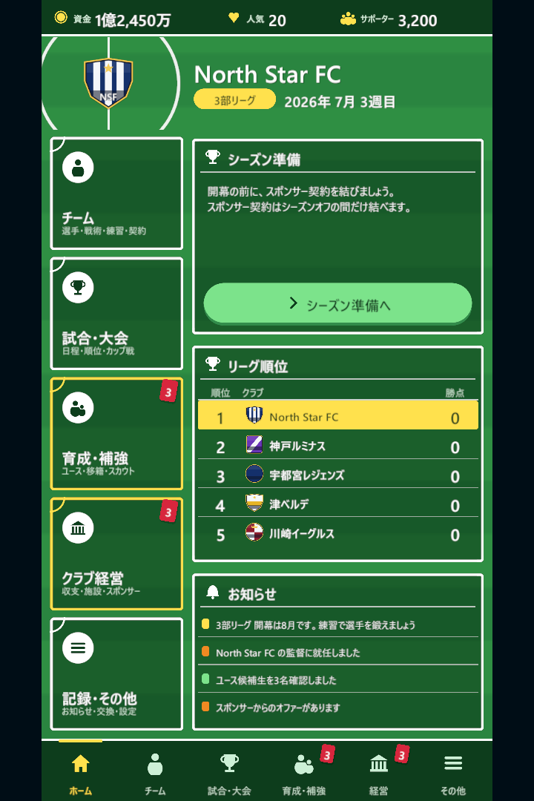
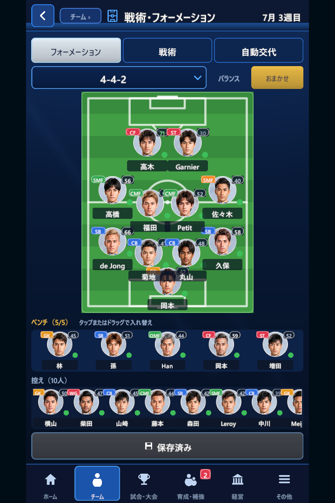


動画で見る
新しい要素（得意技・エース対決・ゾーン・ベストプレー・実績・天才覚醒）
3Dの試合
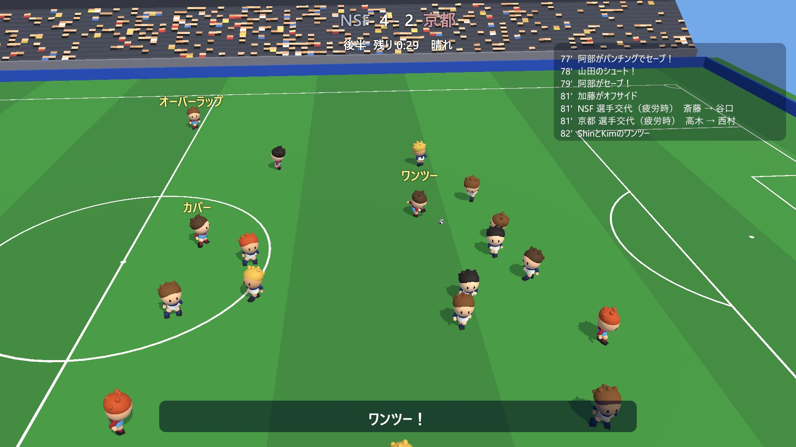
試合は22人の選手が動く3Dで行われます。ワンツー、オーバーラップ、サイドチェンジ、ロングシュート、GKのセーブ……。選手の能力と、あなたが決めた戦術で試合の流れが変わります。
- ハーフタイムに作戦・フォーメーション・選手交代を指示できる
- 2倍速・4倍速・スキップで、見たいところだけ見られる
- 選手の頭の上に名前を表示（自チームは青、相手は赤）
- 時計は実際の試合と同じ0〜90分表示。アディショナルタイムもあります
- 試合を見ずに結果だけ知ることも、2Dのハイライト表示に切り替えることもできる
- スマホは縦持ちでも横持ちでも試合ができる（設定で選べます）


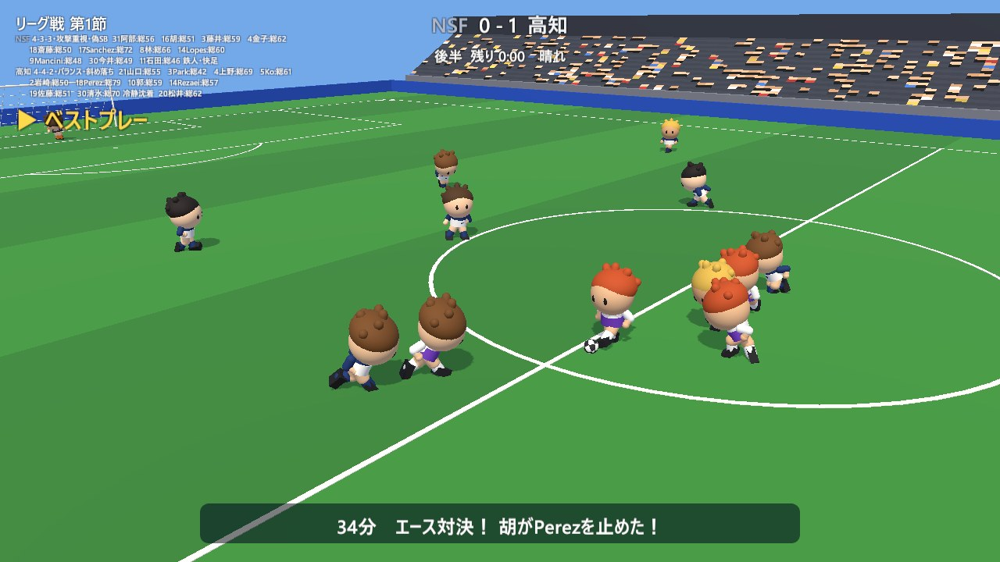
縦持ちの試合
スマホを縦に持ったまま、3Dの試合ができます。カメラはメインスタンドの中央寄りから首を振ってボールを追い、ゴール前では斜めからの角度になります。ハーフタイムの指示の画面も、縦持ち用に「上にピッチ、下にベンチ」の並びになります。


縦持ちでも、横持ちでも
スマホ版は、試合以外の画面と3Dの試合の向きを、設定でそれぞれ「縦持ち」「横持ち」から選べます。はじめは今までどおり、ふだんは縦持ち・試合は横持ちです。PC版は、ウィンドウを横長にすると横向き、縦長にすると縦向きの画面になります。
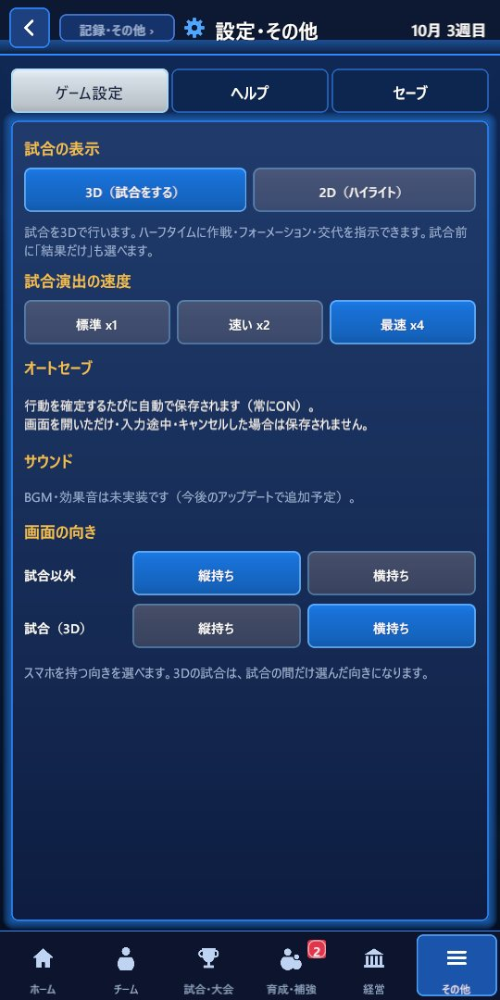
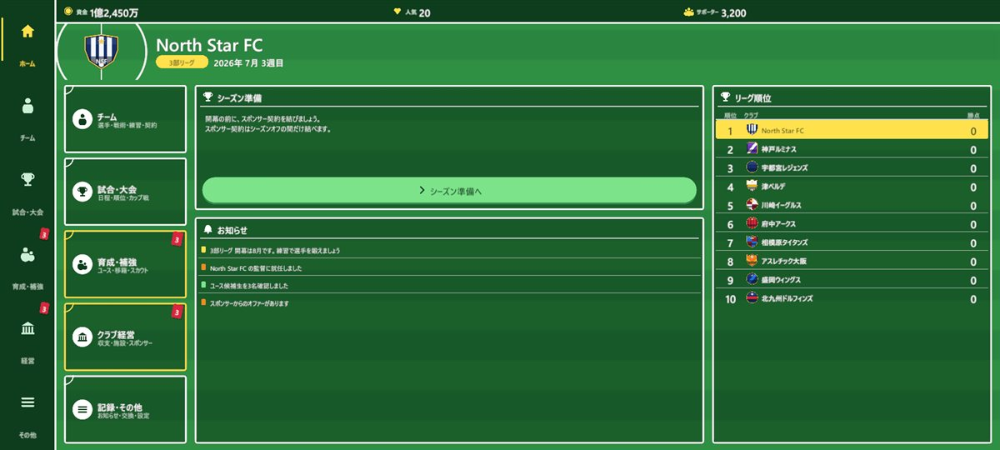
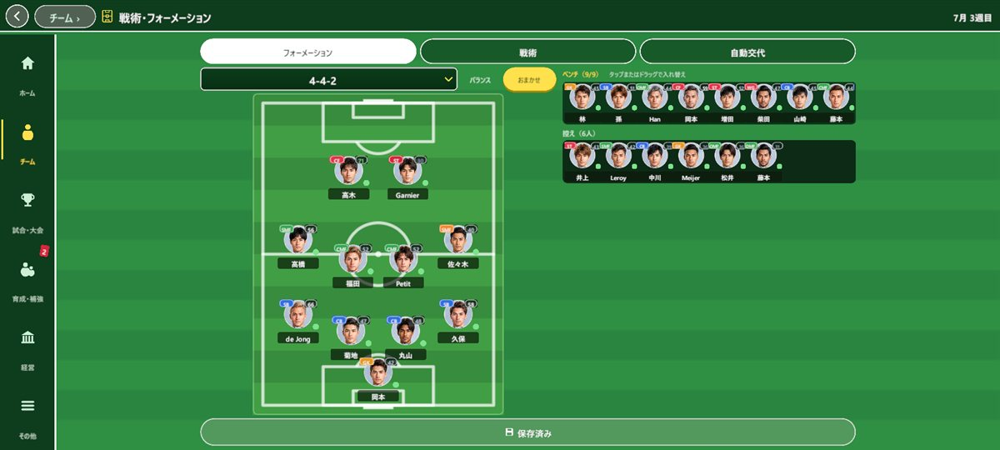
ゲームの特徴
戦術とフォーメーション
フォーメーション6種類、戦術5種類。スタメンとベンチはドラッグで入れ替え。疲れた選手を自動で交代させる条件も決められます。

練習で選手を育てる
毎週の練習メニューで経験値がたまり、能力が上がります。疲れがたまると調子が落ちるので、休ませる選手も選びましょう。ごくまれに、選手の才能が目覚める「天才覚醒」が起きることも。

ユースとユース回想
ユースの候補生を入団させるとき、15〜18歳の育成を振り返るミニゲーム「ユース回想」で、能力やスキルを伸ばせます。

移籍とスカウト
移籍は夏と冬の移籍期間だけ。他クラブの有望な選手は、スカウトが見つけてくれます。スカウトの腕が良いほど、選手の本当の能力やスキルが分かります。

クラブ経営
スポンサー契約、入場料、賞金で収入を得て、選手とスタッフの年俸を払います。施設を強化すると、育成や収入が良くなります。資金が尽きると補強できません。

7月のキャンプ
シーズン前のキャンプで、国内・アジア・欧州からキャンプ地を選び、テーマ（攻撃・守備・フィジカル）に合わせて選手の能力の上限を引き上げます。

得意技
シザース、マルセイユルーレット、クライフターン、ヒールリフト。テクニックの高い選手は得意技を持っていて、試合で決めやすくなります。テクニックの練習で、新しい技を覚えることもあります。

エース対決
試合前に、こちらのエースと相手の守備の要の対決を確認できます。試合中に2人がぶつかると「エース対決！」。カメラが2人に寄って、1対1の勝負を見せます。どちらが勝ったかは試合結果に残ります。

ゾーンとベストプレー
続けて活躍した選手は「ゾーン」に入り、しばらく能力が上がります。試合のあとは、その試合で一番の場面を「今週のベストプレー」として見返せます。

名前と顔写真を変える
自分のクラブの選手は、名前と顔写真を変えられます。顔写真はスマホやPCの写真から選べます。写真は端末の中だけに保存され、チームデータ交換には名前だけが入ります。
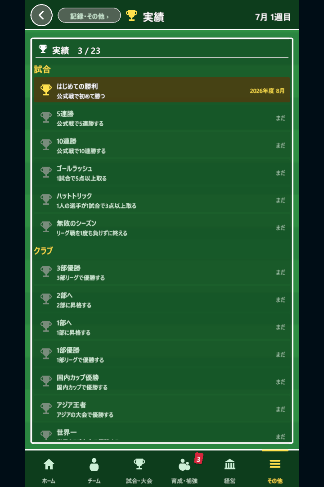
実績
はじめての勝利、10連勝、ハットトリック、ヒールリフトで抜いてゴール、世界一……。23の実績を集めて、クラブの歴史を残しましょう。
世界一への道
- 3部リーグからスタート。各リーグは18クラブ。上位3クラブが昇格、下位3クラブが降格します。
- 1部で上位に入る。1部の上位クラブと国内カップの優勝クラブが、アジアの大会（7〜8月）に出場できます。
- アジアの大会で優勝する。グループリーグを勝ち抜き、準々決勝・準決勝・決勝へ。
- 世界クラブ大会（12月）で優勝すれば、世界一！世界各地の強豪16クラブとの戦いです。
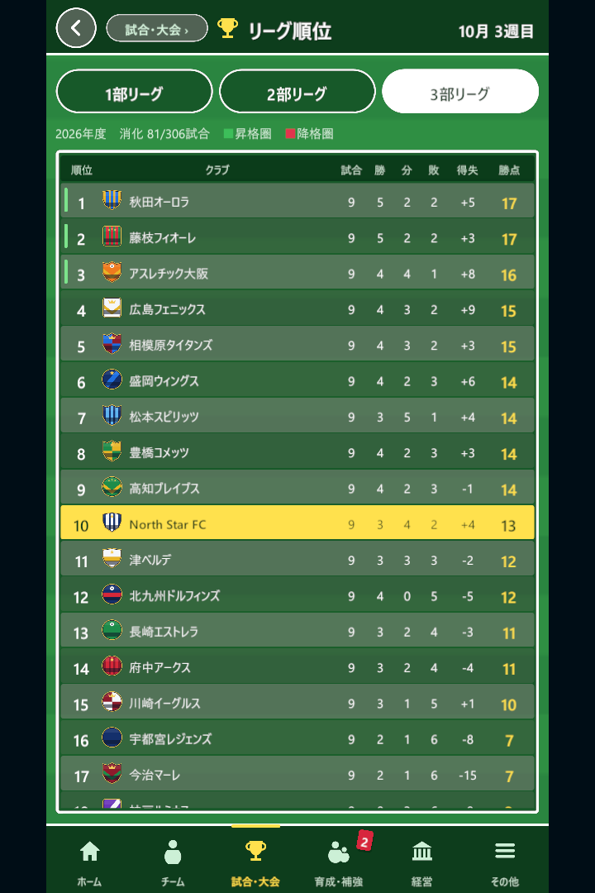
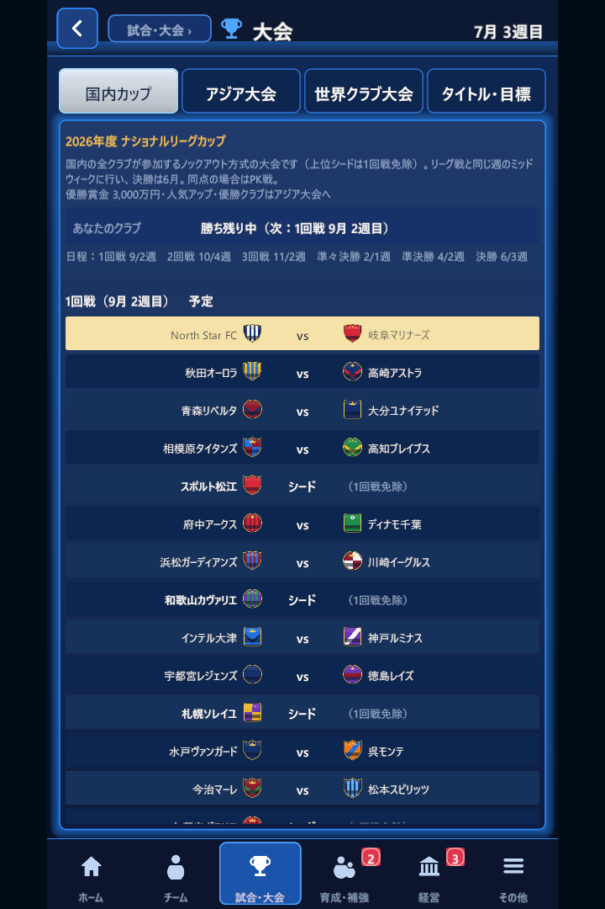

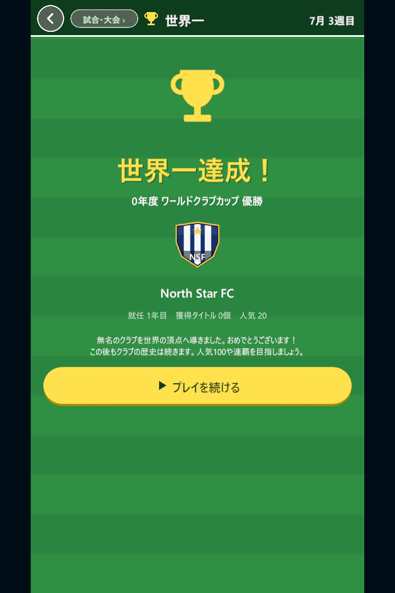
強いクラブを作るには、選手を育てる力、お金をやりくりする力、試合で勝つ戦術のすべてが必要です。
大会のほかにも、自分のチームのデータを出力して、友だちのチームと親善試合をする「チームデータ交換」もあります。
遊び方と攻略
画面の見方や1週間の進め方は「操作方法」、練習・戦術・スキル・施設などの仕組みと数字は「攻略」のページで紹介しています。